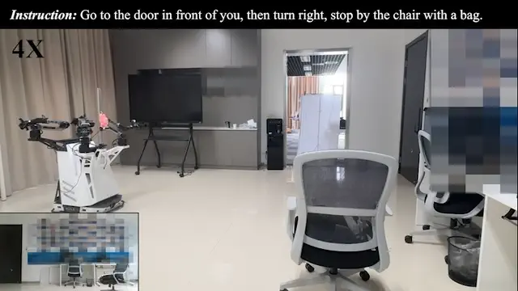
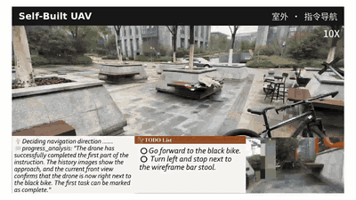
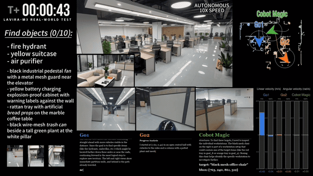

REAL ROBOTS
南京大学 · 中国科学院自动化研究所
LaViRA × RSI
免训练的具身决策软件，负责导航和双臂操作，已在人形、四足、无人机和轮式机器人上运行。
Overview
三层决策结构
LaViRA 把一次决策分成三步：大模型先把指令拆成待办事项，再在画面里框出目标，最后写出动作代码。走路、抓取这些具体动作交给底层控制。整个过程不用机器人训练数据，也不改模型权重，导航和双臂操作用的是同一套流程。
技能代码可以自己改进：编程智能体改完先测，成功率提高才留下，变差就退回去（已实现）；让改进器改进它自己（RSI）还在研发。大模型只给下一步的目标，仿真中底层控制每步不到 10 毫秒；每一步的判断都有文字记录，可以回放。按论文报告，接入四种机器人一共用了约 40 个人时。
4种
真机：人形、四足、无人机、轮式
6项
导航评测，均为免训练方法第一
41.0%
HM3D-M³ 多机协同成功率
67.7%
LIBERO-PRO 仿真操作，π0.5 为 10.8%
0次
权重更新
Explore
真机视频
全部是真机录像。每张卡片标了平台和任务。
HM3D-M³ · Demo 2
6 分钟内找到画面所列 10 个目标中的 7 个
Cobot Magic、Go1、Go2 三台机器人分头搜索同一层楼，经 Wi-Fi 共享体素地图，避免重复找同一片区域。目标用图片、类别或一句描述给出。单次定性演示。
- 机器人
- Cobot Magic、Go1、Go2
- 决策模型
- DeepSeek、通义千问，全部国产
- 地图共享
- 三台机器人经 Wi-Fi 交换体素地图
- 演示性质
- 单次定性演示，非统计结果
- 项目主页
- robo-lavira.github.io/hm3d-m3 ↗
Long horizon
从取试管到倒进烧杯，动作由程序自己规划执行
取试管、换手、对准烧杯、倾倒、放回。每一步都由程序根据相机画面规划、执行，没有人遥控。
以下 7 个桌面任务由双臂 AgileX Piper 按一句话指令完成。画面同时显示语言层和视觉层的推理过程；右上角为真实用时，视频约 5 倍速。
Voice · Chat
在聊天界面里用语音给机器人下任务
在聊天界面里说一句话，轮式双臂 Cobot Magic 在办公室里接下任务并执行。
动作模仿部分复现了 SuperMimic。
Leaderboard
评测结果
Uni-LaViRA 的结果均为免训练。每一行列出该评测上的对比方法，单位为成功率 %。
对比方法Uni-LaViRA（免训练）
SR % · Higher is better
| 评测 | 对比方法 / Uni-LaViRA | 差值 |
|---|---|---|
| R2R-CE指令导航 | +22.4 | |
| RxR-CE多语种指令 | +17.5 | |
| HM3D-OVON★开放词汇导航 | +21.5 | |
| HM3D-v2★目标导航 | +1.5 | |
| MP3D-EQA★具身问答 | +7.4 | |
| OpenUAV★无人机导航 | +2.4 |
灰条是同表最强的免训练方法（EQA、OpenUAV 没有其他免训练方法，取最强训练型）。★ 表示与最强的训练型方法持平或领先。R2R-CE 上 60.7 与 JanusVLN 的 60.5 持平，低于 OmniNav 的 69.5。六项均为 100 条任务 × 3 个随机种子。语言层用闭源 Gemini-3.1-Pro，视觉层用 Qwen3.5-27B，开源骨干仍有差距，第 12 个月公开全国产对比。来源：arXiv 2605.27582。
LaViRA（ICRA 2026）的 R2R-CE 零样本成功率 38.3%，发表时是零样本方法中最高的。NavFoM 的训练用了 56 张 H100、约 72 小时（4,032 GPU·时），训练样本 1270 万条（其中导航 802 万）。
多机、多模态、多目标导航评测 · arXiv 2610.20121
SR % · Higher is better
| # | 方法 | 成功率 | 差值 |
|---|---|---|---|
| 1 | LaViRA-M³免训练 | +14.4 | |
| 2 | 最强适配基线对比方法 |
SPL 约为适配基线的 2 倍；本方法相机视场更宽，同为 42° 视场时成功率 29.6%，仍领先 3 个百分点。验证集 1,000 回合，3,926 个目标，379 个开放词汇类别，训练侧 10 万条观测–分配样本；目标可以用类别、图像或文字给出。仿真用的是国产开源 Qwen3.5-27B。
真机实录：Cobot Magic、Go1、Go2 三台机器人，6 分钟内找到画面所列 10 个目标中的 7 个（单次演示）。四场演示共 560 次决策调用，全部来自国产大模型（DeepSeek、通义千问 API）；语言层中位时延 2.1–5.8 s，视觉层 1.0–5.2 s。单机实验中，Cobot 板载 RTX 4090 本地运行 Qwen3.5-27B，G1 和 Go1 板载 Orin NX 本地运行 Qwen3.5-9B（Uni-LaViRA 论文）。
Ultra-LaViRA 仿真 · RGB-D 输入 · 0 次权重更新
SR % · Higher is better
| # | 方法 | LIBERO-PRO 成功率 |
|---|---|---|
| 1 | Ultra-LaViRA免训练 | |
| 2 | π0.5 | |
| 3 | OpenVLA | |
| 3 | π0 |
LIBERO-PRO 为官方步数下八项平均。RoboSuite 上成功率 98.3%，是同任务开发的方法中最好的。编程智能体改写开抽屉技能代码后，单技能测试（80 个样例）成功率从 44% 升到 86%，模型权重没有改动。第 6 个月的目标是让改进器改进自身，同时旧技能退化不超过 10%。
News
动态
- 最新
Ultra-LaViRA 在双臂真机上做操作任务NEW
从取试管到倒进烧杯的长程任务，动作都由程序自己规划执行。
- 最新
人形机器人全身动作模仿NEW
复现 SuperMimic，真机跳完闪身步 Pro。
宝马南京官方公众号发布 Uni-LaViRA 联合成果
有关单位出具无 GPS 导航应用证明
四足语义建图与语义目标点导航，城市街区与建筑室内，“符合项目预期使用要求”。
与宝马（南京）信息技术有限公司签订技术开发（合作）合同
课题“人形机器人语义能力与交互的研究”；已交中期技术报告，语义建图已完成。
Papers & Ecosystem
论文
代表性论文，以及团队在操作方向的其他论文和专利。


团队操作方向论文
AGiLe CVPR 2026
GravMAD ICLR 2025
ManiLong-Shot AAAI 2026
其他操作研究
RoTri-Diff、Wh0、DeCo、AdaClearGrasp
专利
发明专利已受理 7 项（导航 1 项、操作相关 6 项）。
Contact
联系
合作或数据问题，请发邮件给丁泓宇。
丁泓宇 · 南京大学
hongyuding@smail.nju.edu.cn